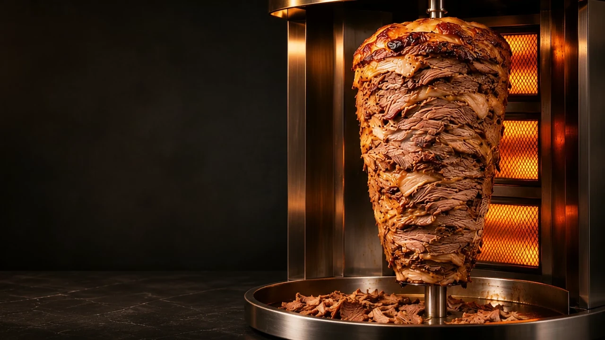
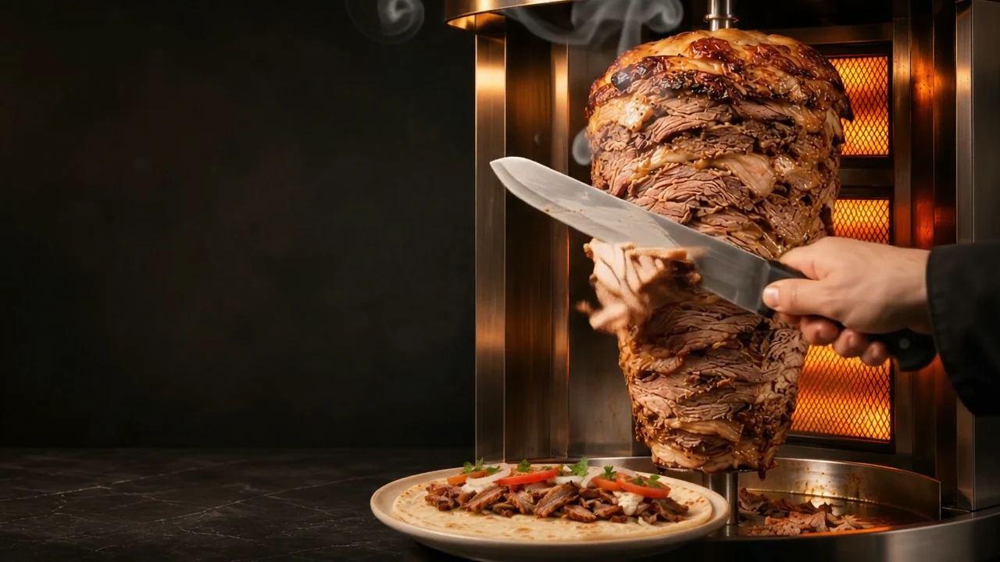
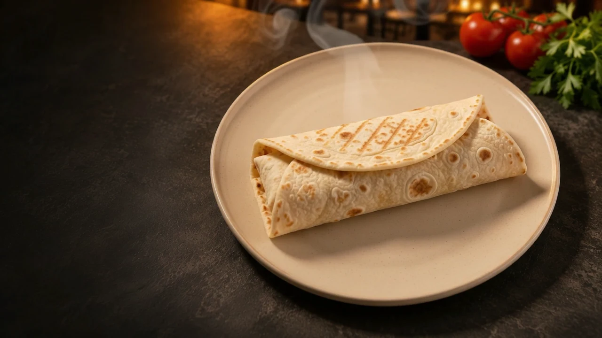

Та самая классика
Мясо, овощи, зелень и чесночный соус.

Мясо с вертела, сочная начинка и хрустящий лаваш.
Выбрать вкусПоджаристая корочка. Нежное мясо. Всё в одном укусе.
Посмотреть менюОстаётся завернуть. И сделать первый хрустящий укус.
Хочу попробовать

За первым укусом.
И за следующим тоже.
Демонстрационная версия сайта шаурмичной.
Онлайн-заказ пока недоступен.
Пока выбрать вкус